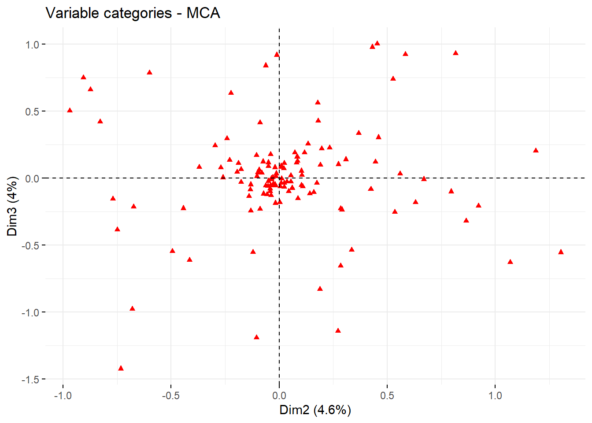

9.3 Correspondence Analysis
Correspondence Analysis uses a similar logic as Principal Component Analysis. Yet, while PCA requires metric data, CA only requires nominal data (such as text). The idea behind both is to reduce the complexity of the data by looking for new dimensions. These dimensions should then explain as much of the original variance that is present in the data as possible. Within R many packages can run CA (such as the ca and FactoMineR packages and even quanteda.textmodels). One interesting package is the R.temis package. This package aims to bring the techniques of qualitative text analysis into R. Thus, the package focuses on the import of corpus from programs such as Alceste and sites such as LexisNexis - programs that are often used in qualitative text analysis. The package itself is built on the popular tm package and has a similar logic.
To carry out the Correspondence Analysis, R.temis uses the FactoMineR and factoextra packages (Lê et al., 2008). Here, we will look at an example using data from an article on the stylistic variations in the Twitter data of Donald Trump between 2009 and 2018 (Clarke & Grieve, 2019). Here, the authors aimed to figure out whether the way Trump’s tweets were written fluctuated over time. To do so, they downloaded 21,739 tweets and grouped them into 63 categories over 4 dimensions based on their content. Given that all the data used in the article is available for inspection, we can attempt to replicate part of the analysis here.
First, we load the packages we need for the Correspondence Analysis:
Then, we import the data. You can do so either by downloading the replication data yourselves, or use the file we already put up on GitHub:
urlfile = "https://raw.githubusercontent.com/SCJBruinsma/qta-files/master/TRUMP_DATA.csv"
tweets <- read_csv(url(urlfile), show_col_types = FALSE)This data set contains quite some information we do not need. To begin with, we remove all those variables that do not contain information about the 63 categories and the length of the tweet in words. Also, for clarity’s sake, we sample 200 of the tweets:
We can then run the MCA with the FactoMineR package. For this, we have to give the data set and the number of dimensions we think are in the data. We can set the latter either by establishing the dimensions as in a regular PCA (for example through a scree plot) or based on theory. Here we combine both and use the 5 dimensions established in the article. Besides this, we set a supplementary quantitative variable as quanti.sup=1. As this is a quantitative variable, it is not taken into consideration by the MCA, but does allow us to assess later on how it correlates with each of the five dimensions:
First, let’s start by looking at the association of the word length with the five dimensions:
## $coord
## Dim 1 Dim 2 Dim 3 Dim 4 Dim 5
## WORDCOUNT 0.8668104 -0.2107786 0.02090331 0.03345767 -0.05383935As we can see, the word length has a strong correlation with Dimension 1. This means that this dimension captures the length of the words and is not a separate dimension. Thus, when we want to look at the correspondence between the categories and the dimensions, we can ignore this dimension. Thus, for the MCA, we will look at dimensions 2 and 3:
fviz_mca_var(mca_tweets,
repel = TRUE,
geom = c("point"),
axes = c(2, 3),
ggtheme = theme_minimal()
)
Here, we only plot the points as adding the labels as well will make the picture quite cluttered. In the article, the authors identify Dimension 2 as ‘Conversational Style’ and Dimension 3 as ‘Campaigning Style’. The plot thus shows us that some categories belong to one of these dimensions and not to the other. To see for which cases this is most often the case (the ones that have the most extreme positions), we can have a look at their coordinates:
var <- get_mca_var(mca_tweets)
coordinates <- as.data.frame(var$coord)
coordinates <- coordinates[order(coordinates$`Dim 2`),]
head(coordinates)## Dim 1 Dim 2 Dim 3 Dim 4 Dim 5
## POSESPRPN_P 0.03383985 -0.9689511 0.5011988 0.036488377 0.36083073
## PROGRESSIVE_P 0.79201463 -0.9059134 0.7499092 -0.674316668 0.46134193
## SUPERLATIVE_P 0.37755724 -0.8728057 0.6594311 -0.147514294 -0.41714831
## GERUND_P 0.20213101 -0.8295159 0.4209137 0.089642937 0.82377111
## MULTIWVB_P 0.42162442 -0.7694130 -0.1558600 -0.003865414 0.37457619
## COLON_P -0.24915096 -0.7493897 -0.3866968 1.023830211 -0.07073923Here, remember to look only at the results from the second column onward. Here, we see that one extreme category for the second dimension (Conversational Style) was the use of a colon (:) or possessive proper nouns (such as Hillary’s). This seems to fit well with the idea of conversational style. We can also see that the latter one also corresponds quite well with Dimension 3 (Campaigning Style), while the first one does not.
As you can see, the possibilities with MCA call for a rather investigative approach. For this reason, the designers of FactoMineR developed a Shiny app that allows you to play around with the data and look at all the various options. Load it by running:
Ensure you quit by clicking the “Quit the App” button to return to R. For more information on the ‘Facto’-family packages, please have a look at the original article by Lê et al. (2008) or the website that belongs to it: http://factominer.free.fr/.